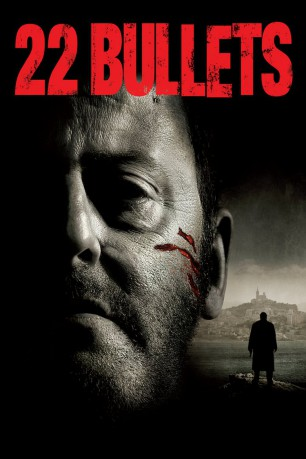

#282 22 Bullets
 
 IMDB-Wertung: 6.7 / 10
IMDB-Wertung: 6.7 / 10  Metascore: 0
Metascore: 0 
Charly Mattei hat mit seiner kriminellen Vergangenheit abgeschlossen: Mafia-Pate, schmutzige Geschäfte, Mord und Totschlag - das war einmal. Seit drei Jahren führt er ein beschauliches Leben und widmet sich liebevoll seiner Frau und seinen beiden Kindern. Daran wird sich so bald auch nichts ändern. Glaubt er. Doch eines Wintermorgens holt ihn sein früheres Leben auf brutale Weise ein: In einem Parkhaus am alten Hafen von Marseille wird Charly von einem achtköpfigen Mordkommando überfallen und mit 22 Kugeln niedergestreckts. Als die maskierten Angreifer vom Tatort verschwinden, gehen sie davon aus, dass Charly tot ist. Tatsächlich überlebt er schwer verletzt. Der Polizei gegenüber schweigt sich der Ex-Pate über die Täter und möglichen Hintergründe aus. Doch er hat einen Verdacht. Kaum genesen, beschließt Charly, die Verantwortlichen des hinterhältigen Anschlags auf sein Leben zu finden und zur Rechenschaft zu ziehen...
Jahr: 2010
Dauer: 117 Minuten
FSK: 18
Land: Frankreich Studio: Sony Pictures Home EntertainmentTonspuren:
Untertitel:
Auflösung: 1080p (1920×816) Größe: 7495 MB
Genre: Action, Krimi, Thriller
Regisseur: Richard Berry
Drehbuch: Franz-Olivier Giesbert, Richard Berry, Matthieu Delaporte, Alexandre de La Patellière, Richard Berry
Soundtrack: Klaus Badelt
Darsteller:
 Jean Reno als Charly Matteï
Jean Reno als Charly Matteï Kad Merad als Tony Zacchia
Kad Merad als Tony Zacchia Jean-Pierre Darroussin als Martin Beaudinard
Jean-Pierre Darroussin als Martin Beaudinard Marina Foïs als Marie Goldman
Marina Foïs als Marie Goldman Joey Starr als Le pistachier
Joey Starr als Le pistachier- Joséphine Berry als Eva Matteï
 Moussa Maaskri als Karim
Moussa Maaskri als Karim Guillaume Gouix als Le Morvelous
Guillaume Gouix als Le Morvelous- Daniel Lundh als Malek Telaa
- Gabriella Wright als Yasmina Telaa
- Dominique Thomas als Ange Papalardo
- Richard Berry als Aurelio Rampoli
 Venantino Venantini als Padovano
Venantino Venantini als Padovano Claude Gensac als Mme Fontarosa
Claude Gensac als Mme Fontarosa- Max Baissette de Malglaive als Anatole Matteï
- Catherine Samie als Stella Matteï
- Lucie Phan als Pat Nguyen
- Fani Kolarova als Christelle Mattei
- Jessica Forde als Clothilde
- Zohra Benali als Mère de Karim
- Benhaïssa Ahouari als Père de Karim
- Mélèze Bouzid als Nadia
- Samir Djama als Nordine
- Luc Palun als Pascal Vasetto
- Martial Bezot als Franck Rabou
 Carlo Brandt als Jose Fontarosa
Carlo Brandt als Jose Fontarosa- Denis Braccini als Le Boumian
- Christian Mazucchini als Bastien Paolini
- Jean-Jérôme Esposito als Rochegude
- Jean-Claude Bouillon als Me Martinelli
- Yan Brian als Le directeur de cabinet
- Jean-Pierre Sanchez als Bertrand
- Sonia Zonenberg als Femme de Zacchia
 Philippe Magnan als Jean-Daniel Pothey
Philippe Magnan als Jean-Daniel Pothey- Cédric Appietto als Marco Echinard
- Jean-Luc Borras als Albert Servier
 Xavier Lemaître als Policier / Evéché
Xavier Lemaître als Policier / Evéché- Ysae als Technicien Soum
- Jean-Christophe Clément als Policier / Couloir hôpital
- Louis-Adrien Debey als Alexis Goldman
- David Koubi als Policier commissariat
- Arthur Mazet als Charly Matteï 20 ans
- Anthony Sonigo als Tony Zacchia 15 ans
- Grégory Gatignol als Martin Beaudinard 20 ans
- Pascal Germain als Médecin / Fourchette
- Florian Marcaillou als Chirurgien
- Clélie Mathias als Journaliste LCI
- Damien Givelet als Journaliste LCI
- Rachid M'Barki als Journaliste BFM
- Laurent Fernandez als Gardien de prison
Datei: X:\FSK18-2010\22 Bullets (2010, FSK18, 1920x816).mkv seit 16.02.2015
Festplatte: FSK18
 Es gibt insgesamt 35 Filme in der Gruppe 'FSK18-2010'
Es gibt insgesamt 35 Filme in der Gruppe 'FSK18-2010'